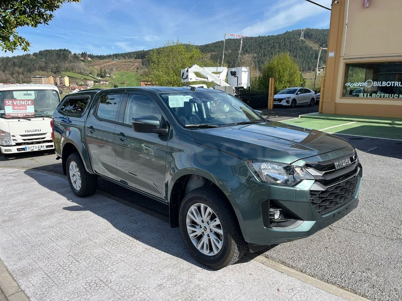
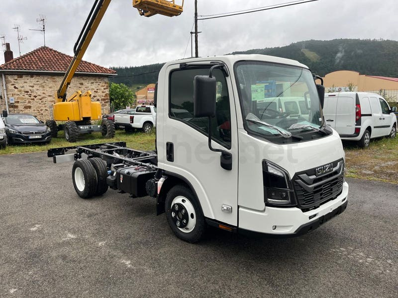
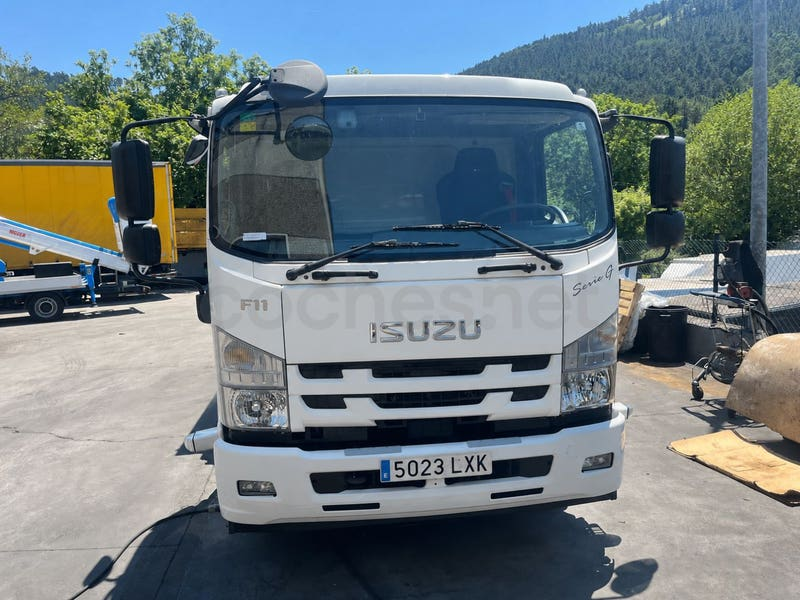
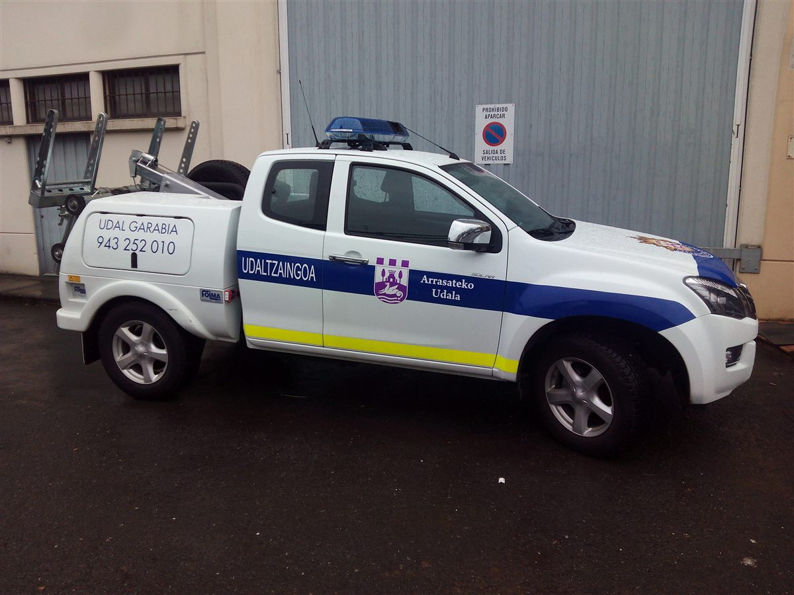
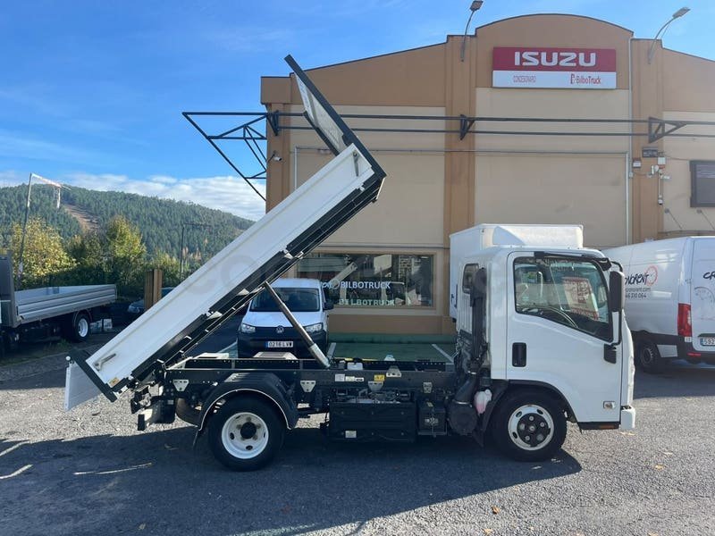
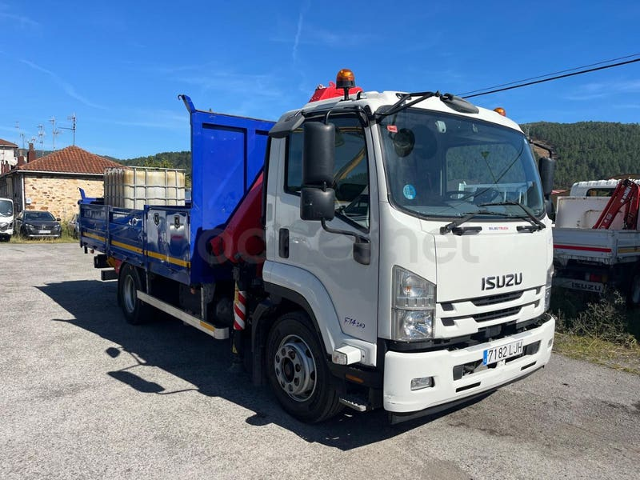
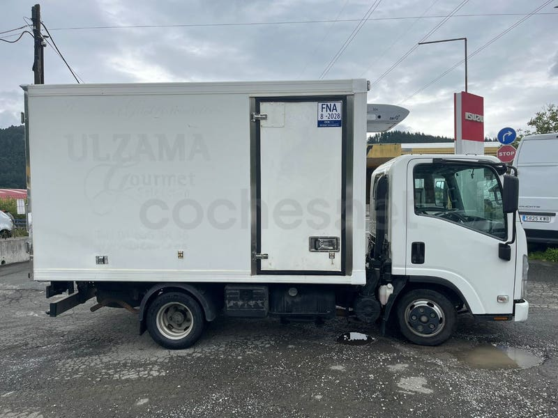
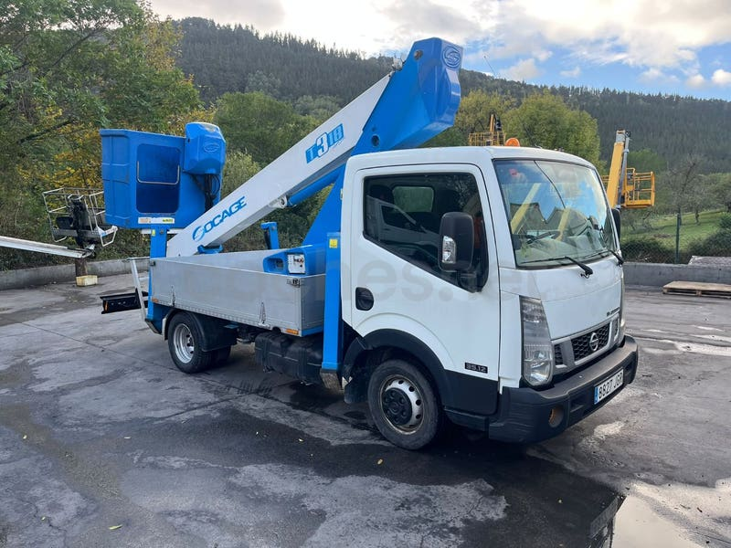

Pick-up 4x4
D-Max
El pick-up de trabajo de Isuzu, con cabina simple, extendida o doble. Las unidades nuevas llevan 5 años de garantía.
- Single
- Space
- Crew
Nuevo desde37.700 €
Ver D-Max Concesionario oficial Isuzu · Bizkaia
Camiones, furgonetas y pick-ups de nuestra propia flota, revisados en nuestro taller oficial de Bedia. Y toda la gama Isuzu nueva.
Stock de ocasión
Cada vehículo con sus fotos reales, precio y kilómetros. El stock se actualiza solo cada día.
Gama Isuzu nueva
Somos el concesionario oficial Isuzu de Bizkaia. Te ayudamos a elegir modelo y carrocería, y te lo entregamos preparado para trabajar.

Pick-up 4x4
El pick-up de trabajo de Isuzu, con cabina simple, extendida o doble. Las unidades nuevas llevan 5 años de garantía.

Camión ligero
Chasis para volquete, caja abierta, grúa o isotermo. Las versiones de 3.500 kg se conducen con carné B.

Camión medio
Hasta 14 toneladas, para obra, servicios municipales y equipos con grúa. Lo configuramos a medida.
Carrozados y transformaciones
Muchos de nuestros vehículos ya salen carrozados. Si necesitas otra configuración, partimos del chasis y montamos lo que pide tu oficio.





Volquetes, cajas abiertas y cerradas, grúas, equipos de frío y plataformas. Te decimos qué chasis encaja con la carga que llevas y con el carné de tus conductores.
Hemos entregado camiones con grúa a los ayuntamientos de Málaga (Isuzu F11) y Aldea del Rey (Isuzu L35 con grúa y cesta), y la D-Max grúa de la Policía Local de Arrasate. Si necesitas varias unidades, pídenos una oferta.
Taller oficial Isuzu
Mantenimiento, reparaciones y recambios originales Isuzu en nuestras instalaciones de Bedia.
Déjanos los datos y te confirmamos el día y la hora.
Quiénes somos
Somos el concesionario oficial Isuzu de Bizkaia. Vendemos vehículo industrial nuevo y de ocasión de nuestra propia flota, y tenemos taller de mecánica, chapa y pintura en el barrio Murtazar de Bedia.
«Muy amables»
«Rapidez y seriedad»
«Buenísima»
Contacto